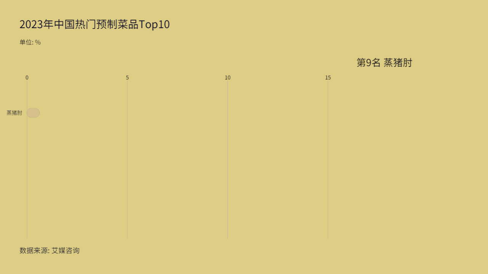
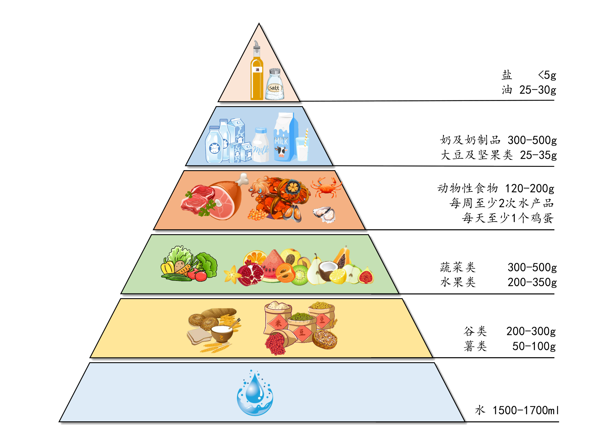

从2019年开始，我国预制菜市场规模开始快速扩大；2022年，我国预制菜市场规模为4196亿元；预计到2026年，我国预制菜市场规模将达到万亿级别。
近日，#留学生 预制菜#相关话题屡上热搜。社交平台上，不少留学生热衷于分享自制预制菜的心得；或是晒出在国外选购预制菜的攻略……预制菜成为海外留学生的新宠。 预制菜究竟是何方神圣呢？预制菜，也称预制菜肴，是食品工业化的产物，其特点在于将食材进行预先处理、加工和包装，供消费者或餐饮环节加工者简单加热或烹饪后食用。 兼顾效率与口味的预制菜成为留学生就餐的新选择，也就不难理解了。
现在，市场上的预制菜种类繁多，包括各种蔬菜、水果、肉类、海鲜等等。 这些预制菜不仅可以直接食用，还可以作为烹饪的原材料，让人们在家中轻松制作美味佳肴。 此外，预制菜还可以根据个人口味和需求进行定制，满足不同人群的需求。

与国外相比（以美国为例）我国预制菜普及程度占10%~15%，而美国已达到60%。就总体趋势而言，预制菜正在发展成消费大市场。
预制菜省域分布主要集中在东部沿海地区，尤其是广东、江苏和浙江等省份。这些地区经济发达，消费能力强，对预制菜的需求旺盛。 预制菜的便捷性使其成为现代快节奏生活下的优选食品。 可以预见，随着生活节奏的加快，预制菜市场预计将持续扩大，特别是在经济发达且消费能力强的地区。

今年三月，《2024胡润中国预制菜生产企业百强榜暨大单品冠军榜》发布，安井食品位列榜单第一，百胜中国、绝味食品、双汇、味知香成为TOP5企业。 以安井公司为例，预制菜市场规模和发展可以从其主营产品的营业收入占比中窥见一二。 安井公司的预制菜业务涵盖了肉制品、鱼糜制品、面米制品、菜肴制品等多个领域，显示出预制菜市场的广泛性和多样性。 安井公司作为预制菜巨头，其肉制品和鱼糜制品占比均达32.38%，显示预制菜市场的巨大潜力。 随着消费者对便捷、健康食品需求的增长，预制菜市场规模将持续扩大。 安井公司凭借在预制菜领域的显著优势，有望继续领跑市场。其成功在于不断满足消费者对方便、快捷食品的需求。
据艾媒数据中心数据显示，食品行业从业人员满意度较低，而学校食堂工作人员满意度较高。 中学学生家长和小学学生家长对预制菜也有较高的满意度。中小学生和大学生则呈现出不同的满意度趋势。 从整体来看，大家对于预制菜的接受程度普遍较高。
去年，预制菜进校园事件引发热议，各社会群体对于预制菜进校园的隐忧多在健康方面：防腐剂危害健康，价格高增加经济负担，食材可能不新鲜或保质期过长，品牌和监管存疑，运输过程易污染等等。 教育部认为预制菜“不宜推广进校园”，原因是“预制菜尚无统一标准体系、认证体系、追溯体系等有效监管机制”，需强化质量控制、安全性和营养管理，确保学生饮食安全健康。年初，预制菜国家标准报送稿已经出炉，最快半年内便有结果，预制菜大产业的障碍逐渐扫除。

近年来，年夜饭预制菜逐渐崭露头角，成为众多家庭欢度春节的新选择。根据2023年中国春节热门预制菜品top10的数据，我们可以看到猪肚鸡、酸菜鱼、狮子头等经典菜肴纷纷上榜，这些菜肴以其独特的口感和丰富的营养赢得消费者的青睐。
像福建传统名菜“佛跳墙”，在人们印象中似乎只有餐厅里的高级大厨才能做出来。现在被做成预制菜后，人们在家就能复刻餐厅里的这道大餐。而这道用料新鲜、原本只有在南方才能尝到的特色春菜腌笃鲜，被做成预制菜后，无论你在哪里都能享受到这个好味道。
从小吃到大餐，从日常便饭到聚会宴请，现在，预制菜几乎囊括了人们所需的全部菜品，满足各种美食需求。未来，随着人们生活水平的提高和对健康饮食的重视，预制菜市场有望持续增长，成为年夜饭餐桌上的新宠。

预制菜实现菜品标准化供应，利于餐饮企业降本增效。 预制菜的出现虽然引发了许多人们不同的看法和争议，但也实实在在的为人们的生活带来了许多便利，逐渐成为餐桌上的新宠。 对于餐厅来说，成本中占比较高的是原料、房屋租赁和人力费用。 预制菜实现菜品标准化供应，有效减少餐饮店的食材成本、人工成本和后厨面积，帮助餐饮店提升利润率水平，同时有效缩短出菜时间，有助于提升出餐率与翻台率，提升餐厅经营效率，符合品牌化预制菜企业的规模化发展需求。 预制菜的使用还减少了商家对食材和调味料的储备需求，从而避免了因食材过期而造成的损失。预制菜采用标准化生产工艺，食品质量相对稳定，口感和营养成分也得到了很好的控制。

以上，预制菜通过降低食材成本、人工成本、运营耗损以及提高出餐速度和生产效率等方式，为商家带来了显著的成本降低好处。 随着中国餐饮连锁化地不断提升和外卖渗透率不断增大，餐饮行业对产品的品控、出餐速度、口味等需求亦随之增大，这也加速了连锁餐饮和外卖服务对预制菜的需求扩大。
冷链物流提效升级，筑牢预制菜行业发展基石 预制菜对食材保鲜程度要求较高，速冻技术的技术精进使预制菜的保鲜时长更久，冷链物流的提效增速扩大了短保类食品的配送范围，减少了生鲜产品的损耗率，保障了预制菜品的新鲜度，是预制菜行业迈向标准化、产业化的重要前提条件，保证了餐饮食材在运输、仓储环节的品质，满足了消费者对口感和体验的高品质要求。 艾媒数据显示，2021年中国冷链物流市场规模达5699亿元，冷库总容量达5224万吨，2020年冷藏车保有量达28万辆，冷链物流及仓储体系稳步发展。
.png)
.png)
三月，正是雷笋的采收季,
笋农老盛正忙着将刚摘下的笋打包运走。一个月前，一家预制菜生产企业来到这里，与他们这些种笋的农民们达成了合作，大批量采购雷笋，用来制作冷藏预制菜腌笃鲜。 这让老盛他们这些种笋的农民成了直接受益者。
.png)
近年来，绿色健康的生活理念深入人心，人们希望能吃到新鲜的食材，于是以时令蔬菜为原料的冷藏预制菜应运而生。笋农老盛他们种的笋，就是要制作成这种冷藏预制菜。 和可以保存好几个月的冷冻预制菜不同，冷藏预制菜的保质期只有几天，所以整个生产链条的每个环节都需要高效运转。这家收购笋的企业，会对预制菜的销售数据实时统计和分析，然后根据这些信息来下订单。这样不仅可以帮助农民合理规划采收时间和数量，附近的工厂也能提前调整好生产线，在24小时之内将新鲜的雷笋洗净、去皮、切块，加工成安全、卫生的预制菜原料。
.png)
而得益于冷链技术的发展，处理后的新鲜雷笋可以跨越山海，快速运输到位于天津的中央厨房。在那里，来自浙江的雷笋和来自安徽的咸肉如期汇合。在生产线上严格按照配方和流程制成预制菜，再由冷链就近运输到附近的门店。 从农民挖笋到被做成预制菜摆上超市的货架，整个流程大约3天，上架的菜品可以保证新鲜、安全，有足够的保质期供消费者购买。
受一线年轻消费者青睐，方便快捷是主要购买原因。
预制菜的消费者群体中一二线城市消费群体居多，一线城市占比超过50%；消费者年龄分布：以中青年为主，21-40岁消费群体占比超过80%。
艾媒调研数据显示，近七成消费者购买预制菜的目的是节省时间，其次是美味可口和体验尝鲜。在“宅经济”的趋势之下，预制菜本质是减少菜品加工程序，方便消费者更快捷地享用美食，同时相较于外出用餐和点外卖的花费都更低，更加推动了预制菜行业的快速发展。
预制菜操作方便快捷，适用都市快节奏生活；越来越多的女性加入职场，压缩了大量的做饭时间，导致以家庭为单位的消费群体不断扩大，而且中 国家庭逐渐趋于二人户甚至是一人户的模式，没时间做饭或不愿意做饭的个人和家庭越来越多.预制菜的适用人群范围不断拓宽；预制菜几乎涵盖了大部分中国菜系，适用于家庭大聚餐、朋友聚会、外出露营等多元场景，可以满足不同人群的多样口味，且伴随预制菜研发工艺日益精进，在食品安全和营养均衡搭配方面也在不断改进。


预制菜还有营养吗?吃预制菜健康吗?这是很多消费者关心的话题。“预制菜经过热加工处理后，流失的营养素主要是蔬菜中的维生素和少量的矿物质，膳食纤维没有很大损失。肉类产品只要是新鲜的、品质好的，加热后蛋白质流失也并不多。"北京天坛医院临床营养科副主任医师许英霞说。 事实上，不是所有预制菜都存在油盐含量过高的问题。如蔬菜沙拉、鸡肉汤、烤三明治等。这些预制菜中的配料通常是新鲜的蔬菜、水果、肉类和谷物等，而且经过合理的加工和搭配，可以提供人体所需的蛋白质、维生素、矿物质等营养素。
与营养价值问题相比，更加值得注意的是预制菜油盐较多的问题。一些预制菜产品确实存在着脂肪含量高、钠含量高、能量密度高、维生素含量低等问题。调查发现，很多预制菜的钠含量基本都达到了500毫克/100克，按此计算，一份重量300克的预制菜的钠含量大约可以达到1500毫克。 《中国居民膳食指南2022》建议，成年人每天摄入食盐不超过5克。一般食盐中钠含量约40%，也就是说，成年人每天摄入钠不超过2000毫克。按照这个标准计算，一份预制菜就可能占掉一个成年人一天钠摄入量的大多数份额。
然而，预制菜在为我们的生活提供营养和便捷的同时，也存在着一些问题。部分预制菜可能存在添加剂过多，生产环境不卫生，营养成分损耗等问题。 近年来，预制菜产业发展迅猛，大量预制菜企业涌入市场，为行业注入了活力。当然，新领域也会面临提升品质、规范发展等问题，部分预制菜企业出现经营异常和引起法律诉讼等问题，这体现出我国预制菜行业缺乏统一的标准和相关监管政策。除了企业要加强自律，加大创新，政府相关部门也要细化相关产品标准体系、操作规范流程，为消费者的健康安全，也为新赛道的加快发展把好“安全门”。
冷冻预制菜在加工过程中，维生素C等营养成分易受温度影响而损失，尤其是冷冻过程会改变其分子结构并导致稳定性下降。 此外，冷冻还可能导致细胞膜脆裂，进一步加剧水溶性维生素如维生素B和C的流失。在烹饪过程中，如蒸煮，也会因高温和时间控制不当而损失这些营养素，同时引起蛋白质变性，降低营养价值。然而，真空包装技术的应用能有效减少食材与氧气的接触，延缓氧化反应， 从而在一定程度上保留预制菜中的维生素C、脂肪酸等营养成分，有助于保持食品的营养价值。综上所述，合理选择加工方式和包装技术对于保留预制菜的营养至关重要。
近年来，随着预制菜产业的快速发展，预制菜相关标准的数量也在不断增加。根据红餐产业研究院的数据，截至2024年5月，我国现行预制菜相关的标准共计406项，其中地方标准27项、团体标准289项、企业标准90项。值得注意的是，这些数字相较于更早时间点的统计（如2022年的69项）有了显著增长。 类型多样：预制菜标准涵盖了从原料规范、加工制作、分等分级、质量安全、仓储物流到设备、产业园建设等多个方面。这些标准共同构成了预制菜产业的标准体系，为产业的规范化发展提供了重要支撑。
你会喜欢预制菜吗